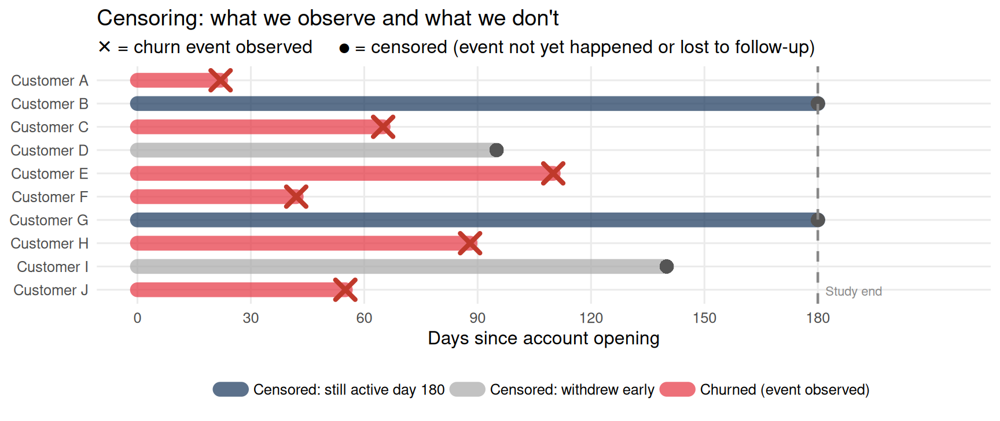

Survival Analysis for Longitudinal Events
Survival Analysis for Longitudinal Events
When the Outcome Is Time-to-Event
Many JDM outcomes of interest are not continuous scores but events with timing:
- A customer churns from a financial app — leaves the platform
- A borrower defaults on their first late payment
- A household opts out of a default enrollment they were automatically placed in
- A consumer makes their first purchase after receiving a marketing offer
- A subscriber cancels automatic fee renewal
For each of these, the scientific question concerns when the event happens and what speeds or slows the rate. Standard regression applied to the event indicator (event = 1/0) ignores timing entirely. Standard regression applied to the elapsed time until the event ignores censoring — participants who have not yet experienced the event by the end of the study. Discarding them as “incomplete data” would introduce systematic bias (the longer-surviving, more loyal customers would vanish from the analysis).
Survival analysis handles both: it models the hazard function over time while correctly incorporating information from participants who have not yet churned, defaulted, or opted out.
What Survival Data Look Like: Censoring in Practice
The diagram below shows why standard regression fails for time-to-event outcomes. Each row is a customer. Some churn at a known time (red ✕). Others are still active when the study ends, or leave for reasons unrelated to churn — these are censored (grey dot). Dropping censored customers would systematically remove the most loyal users and overstate churn rates. Survival analysis retains them, using their partial observation: the fact that they survived at least as long as they were observed.
Customers B and G survive the full 180 days — they contribute positive information about surviving through day 180 without implying they never churn. Customers D and I withdrew early for unrelated reasons — they contribute positive information through their last observed day. Excluding either group would remove the most persistent users and produce a biased estimate of the survival function.
The Hazard and Survival Functions
The survival function \(S(t)\) gives the probability of surviving (not experiencing the event) past time \(t\): \[S(t) = P(T > t)\]
The hazard function \(h(t)\) gives the instantaneous rate of the event at time \(t\), given survival to that point: \[h(t) = \lim_{\Delta t \to 0} \frac{P(t \leq T < t + \Delta t \mid T \geq t)}{\Delta t}\]
They are linked by: \[S(t) = \exp\left(-\int_0^t h(u)\, du\right)\]
JDM intuitions:
- Churn hazard: typically highest in the first weeks after account opening (buyer’s remorse / friction with the app), then declining as engaged users settle in — a decreasing hazard.
- Default hazard: may increase over time as debt accumulates and financial stress compounds — an increasing hazard.
- First purchase hazard: may peak a few days after an offer arrives (immediate response window), then decay as the offer recedes from attention — a non-monotone hazard.
Step 1: The Kaplan-Meier Estimator
The Kaplan-Meier (KM) estimator is the nonparametric estimate of the survival function. It makes no assumptions about the shape of the hazard and handles censoring correctly.
Simulating Time-to-Churn Data
We simulate 120 customers: 60 assigned to a standard onboarding flow, 60 to an enhanced onboarding with a personalized savings goal feature. We track days until app churn over a 180-day observation window. Customers who have not churned by day 180 are censored.
Code
n_customers <- 120
condition <- rep(c(0, 1), each = 60) # 0 = standard, 1 = enhanced onboarding
# True churn times: exponential with condition-dependent rate
rate_standard <- 0.012 # average churn ~83 days
rate_enhanced <- 0.006 # enhanced roughly halves churn rate
churn_time <- ifelse(
condition == 0,
rexp(n_customers, rate = rate_standard),
rexp(n_customers, rate = rate_enhanced)
)
# Censoring at day 180
follow_up <- 180
event_time <- pmin(churn_time, follow_up)
event <- as.integer(churn_time <= follow_up) # 1 = churned, 0 = censored
df_surv <- tibble(
customer = 1:n_customers,
days = event_time,
churned = event,
condition = factor(condition, labels = c("Standard onboarding", "Enhanced onboarding"))
)
df_surv |>
group_by(condition) |>
summarise(
n_churned = sum(churned),
n_retained = sum(1 - churned),
median_days = median(days[churned == 1]),
.groups = "drop"
) |>
knitr::kable(caption = "Churn summary by onboarding condition")| condition | n_churned | n_retained | median_days |
|---|---|---|---|
| Standard onboarding | 52 | 8 | 53.34200 |
| Enhanced onboarding | 42 | 18 | 62.06895 |
Kaplan-Meier Survival Curve
Code
km_fit <- survfit(Surv(days, churned) ~ condition, data = df_surv)
plot_data <- broom::tidy(km_fit)
ggplot(plot_data, aes(x = time, y = estimate, color = strata, fill = strata)) +
geom_step(linewidth = 1.2) +
geom_ribbon(aes(ymin = conf.low, ymax = conf.high), alpha = 0.15, color = NA) +
scale_color_manual(
values = c("#1e3a5f", "#2d6a4f"),
labels = c("Standard onboarding", "Enhanced onboarding"),
name = NULL
) +
scale_fill_manual(
values = c("#1e3a5f", "#2d6a4f"),
labels = c("Standard onboarding", "Enhanced onboarding"),
name = NULL
) +
scale_y_continuous(limits = c(0, 1), labels = scales::percent_format()) +
labs(
title = "Kaplan-Meier survival curves: time to app churn",
subtitle = "Shaded = 95% CI. Steps at each churn event. Customers not yet churned are censored at day 180.",
x = "Days since account opening",
y = "P(still active on platform)"
) +
theme_minimal(base_size = 13)
The KM curve starts at \(S(0) = 1\) (everyone active) and steps down at each churn event. The median survival time is the day at which the curve crosses 0.50 — half the customers in that condition have churned by that point. Censored customers (still active at day 180) contribute their partial information: they reduce the “at risk” count at later times without contributing a step down.
Step 2: The Log-Rank Test
Code
logrank_test <- survdiff(Surv(days, churned) ~ condition, data = df_surv)
logrank_testCall:
survdiff(formula = Surv(days, churned) ~ condition, data = df_surv)
N Observed Expected (O-E)^2/E (O-E)^2/V
condition=Standard onboarding 60 52 40.9 3.00 5.36
condition=Enhanced onboarding 60 42 53.1 2.32 5.36
Chisq= 5.4 on 1 degrees of freedom, p= 0.02 The log-rank test compares survival curves between conditions without assuming a parametric shape. It is most powerful when the hazard ratio between conditions is approximately constant over time — the proportional hazards assumption.
Step 3: The Cox Proportional Hazards Model
The Cox model is the standard regression tool for survival outcomes:
\[h(t \mid X_j) = \underbrace{h_0(t)}_{\substack{\text{baseline hazard} \\ \text{(unspecified)}}} \cdot \exp(\beta_1 X_{1j} + \beta_2 X_{2j} + \cdots)\]
Each \(\exp(\beta_k)\) is a hazard ratio: the multiplicative factor by which the instantaneous churn rate changes for a one-unit increase in \(X_k\).
- HR = 0.5: the treatment halves the churn rate at every time point
- HR = 1.0: no effect on the churn rate
- HR = 2.0: the predictor doubles the churn rate
Code
cox_model <- coxph(Surv(days, churned) ~ condition, data = df_surv)
broom::tidy(cox_model, exponentiate = TRUE, conf.int = TRUE) |>
select(term, estimate, conf.low, conf.high, p.value) |>
knitr::kable(
digits = 3,
caption = "Cox model: hazard ratio for enhanced vs. standard onboarding. HR < 1 means lower churn rate."
)| term | estimate | conf.low | conf.high | p.value |
|---|---|---|---|---|
| conditionEnhanced onboarding | 0.62 | 0.412 | 0.933 | 0.022 |
The Proportional Hazards Assumption
The Cox model assumes the hazard ratio between conditions is constant over time. If the enhanced onboarding’s protective effect fades after month 3 (customers disengage with their savings goal), the curves would converge in later periods — violating proportional hazards.
Code
cox_test <- cox.zph(cox_model)
cox_test chisq df p
condition 0.016 1 0.9
GLOBAL 0.016 1 0.9Code
ggplot(
data.frame(time = cox_test$time, residual = cox_test$y[, 1]),
aes(x = time, y = residual)
) +
geom_point(alpha = 0.4, color = "#1e3a5f") +
geom_smooth(method = "loess", color = "#e63946", se = TRUE) +
geom_hline(yintercept = 0, linetype = "dashed") +
labs(
title = "Schoenfeld residuals: testing proportional hazards",
subtitle = "Flat loess line supports PH. Trend suggests time-varying hazard ratio.",
x = "Days since account opening",
y = "Schoenfeld residual"
) +
theme_minimal(base_size = 13)
Step 4: Frailty Models — Handling Clustered Churn Data
When customers are nested in contexts — bank branches, geographic regions, or platform versions — standard Cox models assume independence that is violated. Customers from the same branch may churn for similar branch-level reasons (local economic shock, branch closure, manager change). The survival analogue of a random intercept is a frailty — a latent multiplicative factor that shifts the churn hazard up or down for everyone in a cluster.
\[h_{ij}(t) = h_0(t) \cdot \exp(\beta X_{ij}) \cdot Z_j, \quad Z_j \sim \text{Gamma}(1, \theta)\]
\(Z_j\) is the frailty for branch \(j\). If \(Z_j > 1\), all customers in that branch have higher churn risk — perhaps because local economic conditions make financial management more stressful for everyone there.
Code
n_branches <- 15
n_per_branch <- 8
n_total <- n_branches * n_per_branch
branch <- rep(1:n_branches, each = n_per_branch)
condition_b <- rep(rep(c(0, 1), each = n_per_branch / 2), n_branches)
# Branch-level frailty (some branches have structurally higher churn)
branch_frailty <- rgamma(n_branches, shape = 2, rate = 2) # variance = 0.5
base_rate <- 0.010
churn_time_b <- rexp(
n_total,
rate = base_rate * branch_frailty[branch] * exp(0.5 * (1 - condition_b))
)
df_frailty <- tibble(
customer = 1:n_total,
branch = factor(branch),
days = pmin(churn_time_b, follow_up),
churned = as.integer(churn_time_b <= follow_up),
condition = factor(condition_b, labels = c("Standard", "Enhanced"))
)Code
cox_frailty <- coxph(
Surv(days, churned) ~ condition + frailty(branch, distribution = "gamma"),
data = df_frailty
)
summary(cox_frailty)Call:
coxph(formula = Surv(days, churned) ~ condition + frailty(branch,
distribution = "gamma"), data = df_frailty)
n= 120, number of events= 108
coef se(coef) se2 Chisq DF p
conditionEnhanced -0.4549 0.1969 0.195 5.34 1.00 0.021
frailty(branch, distribut 11.64 6.42 0.087
exp(coef) exp(-coef) lower .95 upper .95
conditionEnhanced 0.6345 1.576 0.4314 0.9333
Iterations: 8 outer, 32 Newton-Raphson
Variance of random effect= 0.1116516 I-likelihood = -434.3
Degrees of freedom for terms= 1.0 6.4
Concordance= 0.644 (se = 0.031 )
Likelihood ratio test= 22.75 on 7.4 df, p=0.002The frailty variance estimate tells you how much branches differ in their baseline churn hazard. Large frailty variance means the branch you are a customer of matters a great deal for your churn risk — independent of the onboarding condition. This is the survival analogue of a large ICC.
Assumptions
A Map of Survival Methods
| Goal | Method | Package |
|---|---|---|
| Describe survival curves nonparametrically | Kaplan-Meier | survival::survfit() |
| Compare two conditions | Log-rank test | survival::survdiff() |
| Regression with covariates | Cox proportional hazards | survival::coxph() |
| Test proportional hazards | Schoenfeld test | survival::cox.zph() |
| Handle nested/clustered data | Frailty model | survival::coxph(frailty(...)) |
| Time-varying treatment effects | Time-interaction Cox | survival::tt() |
| Visualize survival curves | KM plots, forest plots | survminer |
Reviewer Challenge
TipWhat a Reviewer Would Ask
Challenge 1: “You defined churn as account closure — but isn’t disengagement (stopping app use) the more behaviorally relevant event, and it would be much harder to define?” This is a latent event timing problem. Formally measured churn is a discrete, observable event; meaningful disengagement happens earlier and more continuously. Sensitivity analyses using alternative event definitions (e.g., 30-day inactivity vs. formal account closure) help assess whether conclusions depend on the event definition.
Challenge 2: “Your observation window is 180 days, but many customers are still active at the end. Doesn’t that mean you can’t actually estimate median survival for the enhanced condition?” Correct — if the KM curve does not cross 0.50 within the observation window, the median is undefined from the data. Report the 25th percentile survival time (the day by which 25% of customers have churned) instead, or report survival probabilities at specific time points (e.g., “60% of enhanced customers were still active at day 120”).
Challenge 3: “The frailty variance estimate is large — does that mean your treatment effect is confounded with branch-level variation?” Not confounded, but attenuated. The frailty absorbs between-branch variance that would otherwise inflate residual variance. The treatment effect (HR) is estimated conditional on branch frailty — it represents the within-branch contrast, which is the more precise and causally interpretable estimate. A large frailty variance is an argument for the frailty model, not against it.